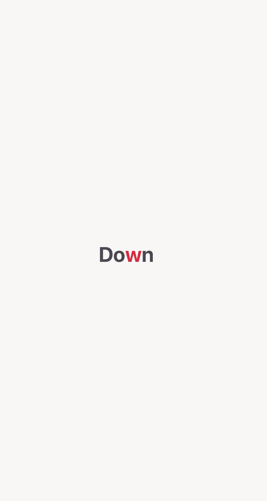

Absorb press kit
Absorb is an iPhone RSVP reading app for people who want to read books, websites, articles, imported documents, and scanned pages with focused one-word-at-a-time pacing. This page collects accurate descriptions, links, assets, and sourceable facts for writers, reviewers, directory editors, and newsletter curators.
What it is
Absorb is a local-first RSVP speed reading app for iPhone. It displays text one word at a time, highlights the optimal recognition point, and lets readers import EPUB, supported text-based PDF, TXT, website, article, and camera-scanned text.
Who it helps
Readers who lose their place, want fewer visual distractions, read across languages, or prefer a focused reading surface for long-form text, books, drafts, websites, scans, and articles.
Privacy posture
No Absorb account is required for core reading. Imported reading content and progress are designed to be processed and stored locally on device.
Approved short descriptions
Absorb is a local-first RSVP speed reading app for iPhone that helps readers focus on one word at a time.Absorb lets iPhone readers import books, websites, articles, documents, and scanned pages, then read them with adjustable one-word-at-a-time pacing and ORP highlighting.Absorb is a focused iOS reader for people who want speed reading, multilingual books, reading stats, and private local-first imports.
Feature highlights
- Rapid Serial Visual Presentation reading mode for one-word-at-a-time pacing.
- Optimal Recognition Point highlighting to keep the eyes fixed on a useful pivot letter.
- EPUB, supported text-based PDF, TXT, website, article, and camera scan import.
- Books and reading content in English, Polish, Japanese, Spanish, French, German, Italian, Portuguese, Chinese, Dutch, Swedish, Norwegian, Danish, Hungarian, Swahili, and Czech.
- Reading speed, progress, daily goals, and word-count stats.
- Local-first reading data with no required Absorb account for core reading.
Assets
Logo
Use the Absorb app logo when referencing the app or linking to the App Store listing.
{kind=link}

App preview
The preview GIF shows the Absorb iPhone app interface and one-word-at-a-time RSVP reading experience.
{kind=link}
Suggested anchor text
These are natural, descriptive anchors for editorial references. Please use whichever is most accurate for your article.
- Absorb RSVP reading app
- local-first speed reading app for iPhone
- RSVP reader for books, websites, and scanned pages
- multilingual RSVP reader for iPhone
- private iPhone reading app with one-word-at-a-time pacing
- Absorb on the App Store